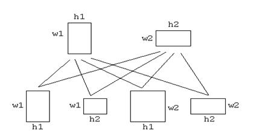

|
E |
Extreme Primitive Society |
Do
not be misled by the name. Primitive society is a community of very advanced
intelligent unisexual beings, called the primitives. The reason that they are
called primitives is that they are all primitive geometric shapes, rectangles.
Every member of the primitive society have two genetic traits, width(w)
and height(h), both can be expressed as positive integers. The primitive
society have in fact so advanced in science and technology that, now they
reproduce only through the means of genetic engineering. Their reproduction
system works as follow.
Two
primitives deposit their gene samples in a Generation Creating Machine (GCM).
The GCM then performs genetic engineering tasks to produce up to 4
offspring. Say the parent primitives had genetic traits (w1,h1) and (w2,h2)
respectively. Then the 4 offspring would have genetic traits (w1,h1)
, (w2,h2) , (w1,h2) and (w2,h1) respectively.

After this, a mutation is performed but this is
optional and GCM decided this randomly. The mutation process is defined as the
incrementing or decrementing of h value by 1 and / or
incrementing or decrementing of w value by 1. And thus, a new
generation of primitives is born. See fig. for better understanding of the
procedure.
Due
to their scientific advancements, the primitives have become immune to
everything except the weather change. Therefore, they do not need to reproduce
very often to ensure survival of their species. Once in ten years or so they
deposit their gene samples to the GCM. Say there are n people in the
current generation, then the GCM uses the genes from every individual of the
current generation with every other individual performing n(n-1)/2
mating. The GCM can also apply mutation on some of the resulting offspring to
increase their fitness. A primitive is considered absolutely fit if both of its
genetic traits have same value, i.e. the rectangle is a square.
Note
that, although n(n-1)/2 mating are performed, at most 2n(n-1)
offspring are born in the next generation. Why up to 2n(n-1), not
exactly 2n(n-1) ? Because they don’t have any need for people with
redundant genetic configurations and the GCM makes sure that only one person of
each possible genetic configuration will remain in the society.
Given
an initial population of primitives, your job is to calculate the minimum
number of generations should pass before an absolutely fit individual is born
in this society.
Input
There
will be multiple test Cases, not more than 1010. Each case starts with
an integer n(>=2) on a line by itself. This is the number of
individuals in the initial population. Following will be n lines, each having 2
positive integers representing the genetic configuration of each individual of
the society. All numbers will be positive integers not exceeding 100.
Output
For
each test case of input, print one line of output beginning with “Case x : “
where x is the test case number. This text should be followed by the minimum
number of generations required before an absolutely fit individual is born in
this society.
|
Sample Input |
Sample Output |
|
3 35
40 30
35 32
44 3 35
68 70
1 79
25 |
Case
1 : 1 Case
2 : 1 |
Problem setter: Raiyan Kamal Special Thanks: Sabbir
Yousuf